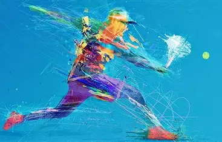
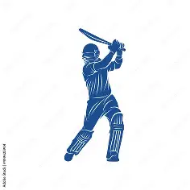
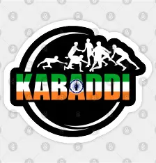

Sports
Sports are physical activities that involve skill, effort, and competition. They can be played individually or in teams, and they range from casual games to professional tournaments. Sports are not just about winning — they build character, discipline, and community.
 Athletics
Athletics
Athletics refers to a group of sports involving running, jumping, and throwing. It includes track and field events, road running, cross-country, and race walking.
Events
- Track: Sprints, middle-distance, long-distance, hurdles, relays.
- Field: Long jump, high jump, shot put, javelin, discus.

Football
Football, also known as soccer in some countries, is a team sport played between two teams of 11 players. The objective is to score goals by getting the ball into the opposing team’s net using any part of the body except the hands and arms (goalkeepers are the exception).
Basic Rules:
- The game is played on a rectangular field with a goal at each end.
- Matches consist of two halves, each lasting 45 minutes.
- Players pass, dribble, and shoot the ball to create scoring opportunities.
- Fouls, offsides, and penalties are enforced by referees to maintain fair play.

Cricket
Cricket is a bat-and-ball team sport played between two teams of 11 players. It originated in England in the 16th century and is now one of the most popular sports in the Commonwealth countries.
GamePlay
One team bats to score runs while the other bowls and fields to restrict runs and take wickets. Formats include Test matches, One Day Internationals (ODIs), and Twenty20 (T20).
Equipment
Cricket bat, ball, stumps, bails, pads, gloves, and helmet.

Kabaddi
Kabaddi is a traditional Indian contact sport played between two teams of seven players. It combines elements of wrestling and tag.
GamePlay
A “raider” enters the opponent’s half to tag defenders and return without being tackled — all while chanting “kabaddi” continuously.
Cultural Significance
Kabaddi has deep roots in Indian villages and mythology, often linked to warrior training and stories from the Mahabharata.

Sports Learning Resources
What are the benefits of playing sports?
Sports improve physical fitness, mental health, teamwork, discipline, and confidence. They also help reduce stress and promote social interaction.
What is the difference between indoor and outdoor sports?
Indoor sports are played inside enclosed spaces (e.g., badminton, table tennis), while outdoor sports are played in open areas (e.g., football, cricket).
Which sport is known as the “king of sports”?
Football (soccer) is often called the “king of sports” due to its global popularity and massive fan base.
What is the Olympic Games?
The Olympics is a global multi-sport event held every four years, featuring athletes from around the world competing in various disciplines.
What is the national sport of India?
While many believe it’s hockey, India does not officially have a national sport. However, hockey has historically been one of the most celebrated.